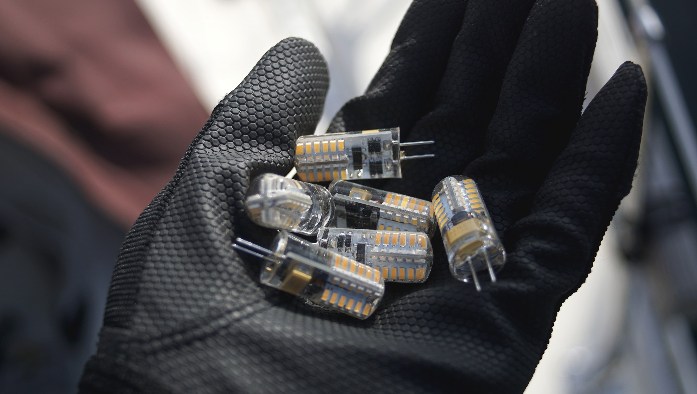

liveaboard
- kitchen tools
- essential tools
- essential products
- diy carbonation system
- habitat
- washing fresh produce
- water storage
- electricity
- privacy
- laundry
- washing dishes
- costs
kitchen tools

Choose quality tools that don't require electricity, that have few components(like unibody knives) and made of materials that will last – or that can be composted. Ideal materials include glass, wood, cast iron and stainless steel. For cooking, we have:
- Bamboo Spatula
- Cast-iron pan
- Cast-iron pot
- Stainless pot
- Large marble mortar and pestle
- Stainless unibody vegetable cleaver
- Stainless unibody serrated knife
- Stainless julienne slicer
- Stainless Measuring cups
- Large stainless bread making bowl
- Stainless Pressure cooker(non-electric)
- Unibody wodden rolling pin
- Potato masher
essential tools

- Stitching awl
- Tawashi scrubber
- Large shears
- Basic rigging knife
- Claw-shaped can opener
- Ceramic coffee grinder
essential products
When it comes to cleaning, polishing or abrading, you don't need a crazy arsenal of products. Below is a list of recommendations for household cleaning, or maintenance aboard a boat.
| All purpose cleaner | Mix of 500 ml hydrogen peroxide(3%) with 2.5 ml(40 drops) of lavender and lemon essential oils, and 0.6 ml(10 drops) of peppermint essential oil. Leave on surface for several minutes before wiping clean. Store in a dark-coloured bottle. |
| Chrome | Apply apple cider vinegar on a soft cotton cloth to rub it clean. Then, use a fresh cloth with a dab of baby oil to make it shine. |
| Copper | Make a paste of either lemon or lime juice and salt. Rub gently to clean. |
| Aluminum | Cream of tartar and hot water. In a dish, add a few spoonfuls of cream of tartar, and stir in water to create a thick paste. Rub over the aluminum surface with a soft cloth. |
| Acrylic | Use a mild dish soap. Mix about 1 L of water with a few drops of dish soap in a bowl, agitate to create suds. Dip cloth into mix, clean acrylic gently. Wipe with a clean, damp rag, and follow up with a soft, dry rag to collect leftover moisture. |
| Plastic | Use a mixture of 1:2 white vinegar and warm water. |
| Brass | Coat the cut half of the lemon with table salt and rub it over the surface, re-coating the lemon with salt as needed. Buff to a shine with a clean, dry cloth. |
| Cast iron | Immediately after use, clean with plain hot water and a sponge. Stuck on food can be removed with a paste made of coarse salt and water. Dry with a towel, or over the oven at a low flame, and coat with a layer of oil. |
| Stainless steel | Wipe down with freshwater, or use a mild soap solution and warm water for tough stains. |
| Fibreglass | Dislodge debris with a scrubbing brush, rinse off with fresh water. For rust stains, make a paste of baking soda and water. Use a soft cloth and gently rub mixture onto the stain. Leave for 1 hour. For heavy yellow waterline and rust stains try Grunt emer-gel, a phosphoric acid-based product. Wear gloves while using it, as it is an irritant. |
| Wood dishes | Wash with mild soap and warm water. Dry immediately after washing. Never soak in water or put it away wet. Every month, apply a coat of food-grade oil (we use coconut) to keep the wood moisturized. |
| Wood cutting boards | Same basic treatment as wood dishes. Before adding oil, scrub clean with lemon and salt. Sprinkle board with coarse salt. Using a lemon half, cut side down, scour the surface. Let sit for 5 minutes, scrape mixture away, rinse clean and let air dry. |
| Sails | Wash with cool water mixed with dishwashing liquid. Let dry thoroughly before storing. |
| Mildew | Use white vinegar or lemon juice full strength. Apply with a sponge or scrubby. |
| Head | Sprinkle baking soda into the bowl, scrub with a brush. |
| Sink clog | Pour 120 ml or more of baking soda down the drain, then add 250 ml of vinegar. Plug it up, and let it sit 10-15 min, then pour more hot water down. Repeat until clear. |
| Clothes | Mix 2 cups of washing soda with the gratings from one 140 g bar of castile soap. Use 15 g for light loads, and 30 g for heavy loads. To whiten, disinfect, deodorize clothes of dish cloths, use sodium percarbonate at a ratio of 15 g per 5 L. |
diy carbonation system

We do enjoy having some fizzy water now and again, but hate to have to purchase bottles for it. We decided against getting a soda stream given the fact that its bottles are proprietary and cannot be filled by anyone other than them. Making your own system is way better, and if you've got a big tank it'll last for a long, long time.
Here's what you'll need to get, this is also the order in which you need to connect them together:
- 5KG CO2 tank
- A regulator
- 1m of of vinyl tubing
- A ball-lock keg coupler
- A carbonator bottle cap
- A soda bottle (for carbonation with a reinforced bottom).
For a full tutorial, check out this site.
habitat
As with most things in life, 20% of anything does 80% of the work. When moving into a smaller space, it is important to find that 20% and surround yourself with things purposefully. Single-serving tools and kitchenware will not do.
Investing in good quality army blankets and waterproof sleepingbags will make a world of difference. Non-metallic(bamboo or ceramic) kitchenware is also essential, everything rusts on a boat - even stainless-steel. To keep our clothes dry, we store them in large sealed industrial plastic containers.
washing fresh produce

After buying fresh produce at the market, I wash everything with baking soda. If there's a lot of dirt, I scrub them with a brush. The mechanical rubbing action and rinsing is very good at removing contaminants. Then finally, I rinse them off with fresh running water and let them dry in the sun. They need to be completely dry, otherwise they may rot faster (moisture accelerates rot).
Washing your produce in baking soda prevents foodborne illness and substantially reduces your exposure to pesticides, it is more effective than using a vinegar solution (because it needs to be used full-strength, and that can get expensive). This washing technique is the same for fresh greens and fruits, although for berries, it is best to wash them right before you plan to eat them.
water storage
Our main tank carries 170 L, our secondary has 50 L, while an additional 100 L is stored in jerry cans. When it is not possible to dock at a marina, we use smaller(4x10L) jerry cans to ferry water from shore. While it requires more trips, the lighter containers are less prone to breakage.
electricity
We have 2 Solar Panels(1 x 100W and 1 X 90W). For additional power, we also carry a Honda EU1000i generator. Our boat has a 75AMP Balmar alternator, but it is only used to charge the batteries on cloudy days. Every single light is LED, cutting down the consumption of power, from lights, by 10 compared to halogens.
There are working alternatives to most powered devices on a boat. We don't have a windlass, pressure faucet, water heater or a fridge. Because of this, it's easy to keep our power consumption low, reducing our need for extra solar, keeping our costs down and reducing the amount of things that can break, or fail.
privacy
There is none. It's something you must prepare for. If you have plans to travel for extended periods of time with another person, you must be compatible, you must discuss problems when they arise and express concerns right away.
The combined space, below and atop deck, is bigger than it seems. If you are near land, there is always the option of going for a walk.
laundry
In populated cities, we carry dirty clothes ashore to a laundromat. If there aren't any, we do our own washing. We wash them by hand with collected rain water, a set of buckets and a brush. The clothes are brushed and washed in soapy water once, then rinsed in fresh water.
For white clothes, or stained garments, we like to soak them in a bucket with some sodium percarbonate. It destains, deodorizes, whitens and is non-toxic to marine life. It breaks down to oxygen, water and sodium carbonate (soda ash) in your wash water.
When underway during long passages, we tend to wear the same clothes for a long, long time. If ever we do need to wash clothes, we'll do a quick salt water wash to save water, and rinse with fresh water. The clothes are hung out to dry on the lifelines, or on a separate line that we set up. Leaving dark clothes out to dry in the sun will cause it to discolour faster - such is the cost of sailing in warm places.
washing dishes
We clean our dishes with boiling water, baking soda (for stains, breaking down grease), vinegar and homemade dishwashing liquid (castile soap-based). It's non-invasive, non-toxic to marine life and is great at removing fat and dirt. The dishes are then left to air-dry outside in the sun. When water is scarce, we clean/rinse the dishes using salt water scooped up from the side of the boat (using a bucket attached to a rope), we also try and use treated rain water, as much as possible.
Our freshwater foot pump pulls water from our tanks and dispenses it to the galley's sink at the rate of approximately a 1/4 cup per push. This system allows us to calculate water-consumption and storage.
costs
Living aboard your boat may incur extra costs, as more is required for comfort, storage etc. Being aboard full-time will wear the boat down in ways different than those caused by racing, as the wear will occur primarily inside the cabin, like the wearing of the varnish/finish on floors and counters, and of the regular use of plumbing in the galley and in the head. This goes on top of regular spendings on maintenance, the cost of which varies depending on the size, material and age of the boat. Maintenance on our boat, traveling offshore, costs us roughly 3000$ per year, this price went up and down depending on what had to be replaced that year. Costs on our boat was higher after purchase as the gear aboard was old (was built in 1982). We spent a lot of money between 2016 and 2020 because we went offshore in difficult waters with our boat. Living aboard in your home country, in inland waters won't cost nearly as much, especially if you anchor out.
Spending time at anchor is free, but if staying at a marina in your home country for long periods, paying for 'liveaboard fees' (up to 150$ extra per month) is necessary. If staying in a marina in a foreign country, liveaboard fees are waived.